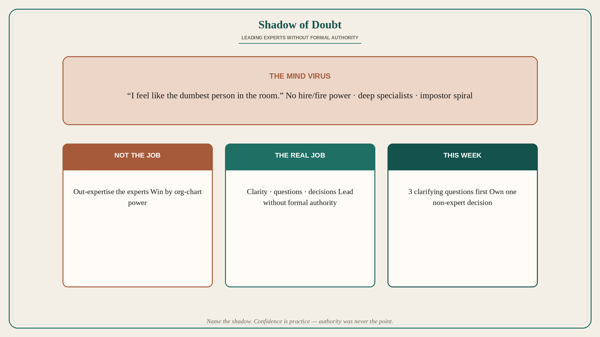

Shadow of Doubt: leading experts without formal authority
Source: George / prodmgmt.world (@nurijanian)
original post
What it claims
The real challenge of being a new PM is dealing with the Shadow of Doubt — a mind virus that creeps in when you are trying to lead experts without any formal authority. The post teases how to build confidence when you feel like the dumbest person in the room; the detailed tactics are in the attached image, not in note_tweet. The claim present in text: new-PM fear when leading specialists without authority is the core challenge, not “learning the tools.” (Source post is primarily a carousel/thread image — the detailed process bullets live in the image and are not reconstructed here.)
Why it matters for a PO
Every new PO on a strong eng/design trio hits this: no hire/fire power, deep experts in the room, impostor spiral. Naming it as Shadow of Doubt separates skill gaps (fixable) from the mind virus that freezes facilitation. Authority was never the job; clarity and questions were.
3 takeaways
- New-PM core challenge: Shadow of Doubt while leading experts without formal authority.
- Feeling like the dumbest person in the room is common — confidence is a practice, not a prerequisite.
- The job is not to out-expertise the experts; it is to lead without needing their org-chart power.
Practice this week
In the next trio discussion, ask three clarifying questions before offering a solution. Write one decision you own this week (scope cut, user, success metric) that does not require being the deepest expert. Do not apologize for not knowing the implementation detail.